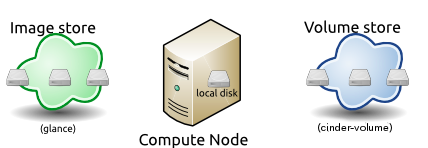
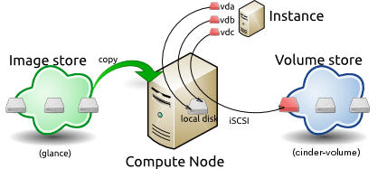
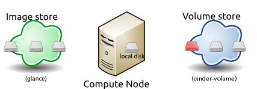

Contents
Images and instances¶
Disk images provide templates for virtual machine file systems. The Image service controls storage and management of images.
Instances are the individual virtual machines that run on physical compute nodes. Users can launch any number of instances from the same image. Each launched instance runs from a copy of the base image so that any changes made to the instance do not affect the base image. You can take snapshots of running instances to create an image based on the current disk state of a particular instance. The Compute service manages instances.
When you launch an instance, you must choose a flavor, which represents a set of virtual resources. Flavors define how many virtual CPUs an instance has, the amount of RAM available to it, and the size of its ephemeral disks. Users must select from the set of available flavors defined on their cloud. OpenStack provides a number of predefined flavors that you can edit or add to.
Note
- For more information about creating and troubleshooting images, see the OpenStack Virtual Machine Image Guide.
- For more information about image configuration options, see the Image services section of the OpenStack Configuration Reference.
- For more information about flavors, see Flavors or Flavors in the OpenStack Operations Guide.
You can add and remove additional resources from running instances, such as persistent volume storage, or public IP addresses. The example used in this chapter is of a typical virtual system within an OpenStack cloud. It uses the cinder-volume service, which provides persistent block storage, instead of the ephemeral storage provided by the selected instance flavor.
This diagram shows the system state prior to launching an instance. The image store, fronted by the Image service (glance) has a number of predefined images. Inside the cloud, a compute node contains the available vCPU, memory, and local disk resources. Additionally, the cinder-volume service provides a number of predefined volumes.

To launch an instance select an image, flavor, and any optional attributes. The selected flavor provides a root volume, labeled vda in this diagram, and additional ephemeral storage, labeled vdb. In this example, the cinder-volume store is mapped to the third virtual disk on this instance, vdc.

The base image is copied from the image store to the local disk. The local disk is the first disk that the instance accesses, labeled vda in this diagram. Your instances will start up faster if you use smaller images, as less data needs to be copied across the network.
A new empty ephemeral disk is also created, labeled vdb in this diagram. This disk is destroyed when you delete the instance.
The compute node connects to the attached cinder-volume using iSCSI. The cinder-volume is mapped to the third disk, labeled vdc in this diagram. After the compute node provisions the vCPU and memory resources, the instance boots up from root volume vda. The instance runs and changes data on the disks (highlighted in red on the diagram). If the volume store is located on a separate network, the my_block_storage_ip option specified in the storage node configuration file directs image traffic to the compute node.
Note
Some details in this example scenario might be different in your environment. For example, you might use a different type of back-end storage, or different network protocols. One common variant is that the ephemeral storage used for volumes vda and vdb could be backed by network storage rather than a local disk.
When the instance is deleted, the state is reclaimed with the exception of the persistent volume. The ephemeral storage is purged; memory and vCPU resources are released. The image remains unchanged throughout this process.

Image management¶
The OpenStack Image service discovers, registers, and retrieves virtual machine images. The service also includes a RESTful API that allows you to query VM image metadata and retrieve the actual image with HTTP requests. For more information about the API, see the OpenStack API Complete Reference and the Python API.
The OpenStack Image service can be controlled using a command-line tool. For more information about using the OpenStack Image command-line tool, see the Manage Images section in the OpenStack End User Guide.
Virtual images that have been made available through the Image service can be stored in a variety of ways. In order to use these services, you must have a working installation of the Image service, with a working endpoint, and users that have been created in OpenStack Identity. Additionally, you must meet the environment variables required by the Compute and Image service clients.
The Image service supports these back-end stores:
- File system
- The OpenStack Image service stores virtual machine images in the file system back end by default. This simple back end writes image files to the local file system.
- Object Storage
- The OpenStack highly available service for storing objects.
- Block Storage
- The OpenStack highly available service for storing blocks.
- VMware
- ESX/ESXi or vCenter Server target system.
- S3
- The Amazon S3 service.
- HTTP
- OpenStack Image service can read virtual machine images that are available on the Internet using HTTP. This store is read only.
- RADOS Block Device (RBD)
- Stores images inside of a Ceph storage cluster using Ceph’s RBD interface.
- Sheepdog
- A distributed storage system for QEMU/KVM.
- GridFS
- Stores images using MongoDB.
Image properties and property protection¶
An image property is a key and value pair that the cloud administrator or the image owner attaches to an OpenStack Image service image, as follows:
- The cloud administrator defines core properties, such as the image name.
- The cloud administrator and the image owner can define additional properties, such as licensing and billing information.
The cloud administrator can configure any property as protected, which limits which policies or user roles can perform CRUD operations on that property. Protected properties are generally additional properties to which only cloud administrators have access.
For unprotected image properties, the cloud administrator can manage core properties and the image owner can manage additional properties.
To configure property protection
To configure property protection, the cloud administrator completes these steps:
Define roles or policies in the policy.json file:
{ "context_is_admin": "role:admin", "default": "", "add_image": "", "delete_image": "", "get_image": "", "get_images": "", "modify_image": "", "publicize_image": "role:admin", "copy_from": "", "download_image": "", "upload_image": "", "delete_image_location": "", "get_image_location": "", "set_image_location": "", "add_member": "", "delete_member": "", "get_member": "", "get_members": "", "modify_member": "", "manage_image_cache": "role:admin", "get_task": "", "get_tasks": "", "add_task": "", "modify_task": "", "deactivate": "", "reactivate": "", "get_metadef_namespace": "", "get_metadef_namespaces":"", "modify_metadef_namespace":"", "add_metadef_namespace":"", "get_metadef_object":"", "get_metadef_objects":"", "modify_metadef_object":"", "add_metadef_object":"", "list_metadef_resource_types":"", "get_metadef_resource_type":"", "add_metadef_resource_type_association":"", "get_metadef_property":"", "get_metadef_properties":"", "modify_metadef_property":"", "add_metadef_property":"", "get_metadef_tag":"", "get_metadef_tags":"", "modify_metadef_tag":"", "add_metadef_tag":"", "add_metadef_tags":"" }
For each parameter, use "rule:restricted" to restrict access to all users or "role:admin" to limit access to administrator roles. For example:
"download_image": "upload_image":
Define which roles or policies can manage which properties in a property protections configuration file. For example:
[x_none_read] create = context_is_admin read = ! update = ! delete = ! [x_none_update] create = context_is_admin read = context_is_admin update = ! delete = context_is_admin [x_none_delete] create = context_is_admin read = context_is_admin update = context_is_admin delete = !
- A value of @ allows the corresponding operation for a property.
- A value of ! disallows the corresponding operation for a property.
In the glance-api.conf file, define the location of a property protections configuration file:
property_protection_file = {file_name}
This file contains the rules for property protections and the roles and policies associated with it.
By default, property protections are not enforced.
If you specify a file name value and the file is not found, the glance-api service does not start.
To view a sample configuration file, see glance-api.conf.
Optionally, in the glance-api.conf file, specify whether roles or policies are used in the property protections configuration file:
property_protection_rule_format = roles
The default is roles.
To view a sample configuration file, see glance-api.conf.
Image download: how it works¶
Prior to starting a virtual machine, the virtual machine image used must be transferred to the compute node from the Image service. How this works can change depending on the settings chosen for the compute node and the Image service.
Typically, the Compute service will use the image identifier passed to it by the scheduler service and request the image from the Image API. Though images are not stored in glance—rather in a back end, which could be Object Storage, a filesystem or any other supported method—the connection is made from the compute node to the Image service and the image is transferred over this connection. The Image service streams the image from the back end to the compute node.
It is possible to set up the Object Storage node on a separate network, and still allow image traffic to flow between the Compute and Object Storage nodes. Configure the my_block_storage_ip option in the storage node configuration to allow block storage traffic to reach the Compute node.
Certain back ends support a more direct method, where on request the Image service will return a URL that can be used to download the image directly from the back-end store. Currently the only store to support the direct download approach is the filesystem store. It can be configured using the filesystems option in the image_file_url section of the nova.conf file on compute nodes.
Compute nodes also implement caching of images, meaning that if an image has been used before it won’t necessarily be downloaded every time. Information on the configuration options for caching on compute nodes can be found in the Configuration Reference.
Instance building blocks¶
In OpenStack, the base operating system is usually copied from an image stored in the OpenStack Image service. This results in an ephemeral instance that starts from a known template state and loses all accumulated states on shutdown.
You can also put an operating system on a persistent volume in Compute or the Block Storage volume system. This gives a more traditional, persistent system that accumulates states that are preserved across restarts. To get a list of available images on your system, run:
$ nova image-list
+---------------------------+------------------+--------+----------------+
| ID | Name | Status | Server |
+---------------------------+------------------+--------+----------------+
| aee1d242-730f-431f-88c1- | | | |
| 87630c0f07ba | Ubuntu 14.04 | | |
| | cloudimg amd64 | ACTIVE | |
| 0b27baa1-0ca6-49a7-b3f4- | | | |
| 48388e440245 | Ubuntu 14.10 | | |
| | cloudimg amd64 | ACTIVE | |
| df8d56fc-9cea-4dfd-a8d3- | | | |
| 28764de3cb08 | jenkins | ACTIVE | |
+---------------------------+------------------+--------+----------------+
The displayed image attributes are:
- ID
- Automatically generated UUID of the image.
- Name
- Free form, human-readable name for the image.
- Status
- The status of the image. Images marked ACTIVE are available for use.
- Server
- For images that are created as snapshots of running instances, this is the UUID of the instance the snapshot derives from. For uploaded images, this field is blank.
Virtual hardware templates are called flavors. The default installation provides five predefined flavors.
For a list of flavors that are available on your system, run:
$ nova flavor-list
+----+----------+----------+-----+----------+-----+------+------------+----------+
| ID | Name | Memory_MB| Disk| Ephemeral| Swap| VCPUs| RXTX_Factor| Is_Public|
+----+----------+----------+-----+----------+-----+------+------------+----------+
| 1 | m1.tiny | 512 | 1 | 0 | | 1 | 1.0 | True |
| 2 | m1.small | 2048 | 20 | 0 | | 1 | 1.0 | True |
| 3 | m1.medium| 4096 | 40 | 0 | | 2 | 1.0 | True |
| 4 | m1.large | 8192 | 80 | 0 | | 4 | 1.0 | True |
| 5 | m1.xlarge| 16384 | 160 | 0 | | 8 | 1.0 | True |
+----+----------+----------+-----+----------+-----+------+------------+----------+
By default, administrative users can configure the flavors. You can change this behavior by redefining the access controls for compute_extension:flavormanage in /etc/nova/policy.json on the compute-api server.
Instance management tools¶
OpenStack provides command-line, web interface, and API-based instance management tools. Third-party management tools are also available, using either the native API or the provided EC2-compatible API.
The OpenStack python-novaclient package provides a basic command-line utility, which uses the nova command. This is available as a native package for most Linux distributions, or you can install the latest version using the pip python package installer:
# pip install python-novaclient
For more information about python-novaclient and other command-line tools, see the OpenStack End User Guide.
Control where instances run¶
The OpenStack Configuration Reference provides detailed information on controlling where your instances run, including ensuring a set of instances run on different compute nodes for service resiliency or on the same node for high performance inter-instance communications.
Administrative users can specify which compute node their instances run on. To do this, specify the --availability-zone AVAILABILITY_ZONE:COMPUTE_HOST parameter.

Except where otherwise noted, this document is licensed under Creative Commons Attribution 3.0 License http://creativecommons.org/licenses/by/3.0/legalcode.